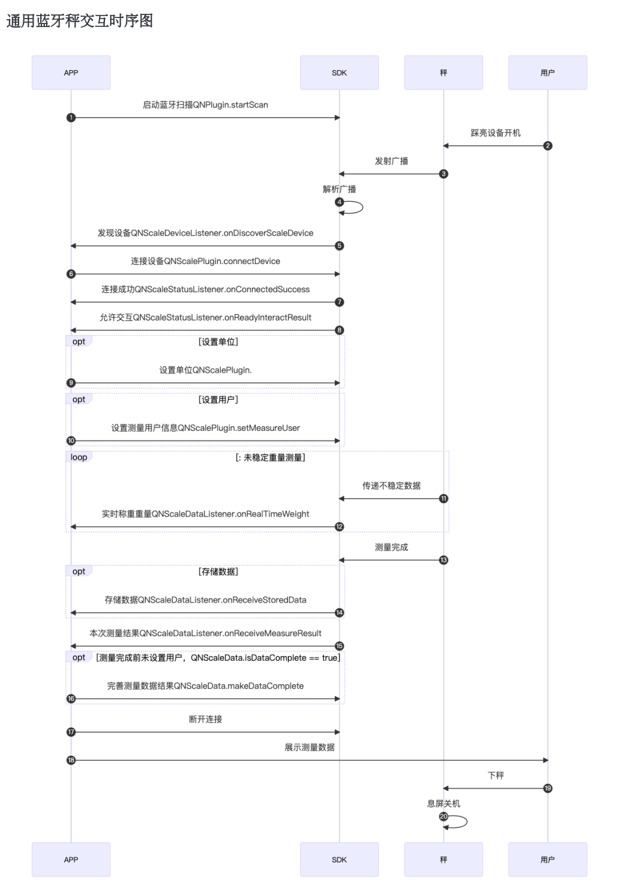
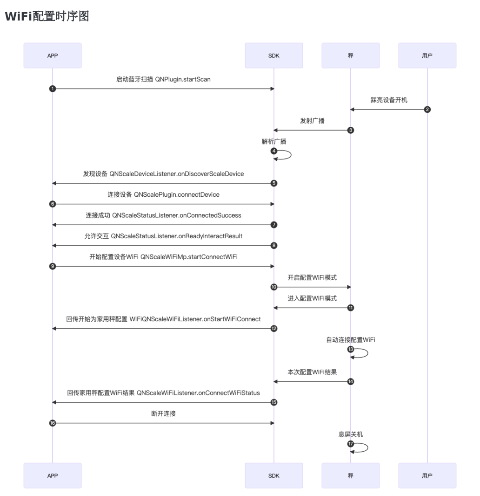

家用秤产品介绍
家用秤是我司推出的一些列主要面向家庭应用的智能体脂秤的统称。
家用秤在实际使用中,根据数据通信方式,划分为蓝牙秤与蓝牙WiFi双模秤; 根据秤端是否支持存储用户信息,划分为普通称与用户秤。
通用蓝牙通信功能
我司所有家用秤设备都支持蓝牙通信功能。APP可以通过SDK与家用秤建立连接,可以实时获取到蓝牙连接状态与秤端工作状态的及时变化信息,可以实时测量体重，本次测量结果,秤端记录的存储数据(最多20条)。
支持WiFi通信功能
是在支持蓝牙通信功能基础上，还会支持WiFi通信功能。使用WiFi通信功能需要APP调用SDK对秤配置QNWiFiInfo。APP服务器需要对接我司提供的Docker。 配置完成后,秤在不连接蓝牙下产生的测量数据，秤在测量完成会主动连接先前配置WiFi,接入网络后会主动将秤端数据(包括存储数据)，发送给配网时预设的serverUrl服务器地址上。
支持存储秤端用户功能
相较普通秤来说秤面大多只能显示体重，其他测量数据需要SDK配合显示的工作原理。支持秤端用户测量的秤在设置好秤端用户信息后，用户是可以脱离蓝牙连接来使用测量功能的，秤会在测量完显示测量指标结果通常会有体脂率，bmi，骨骼肌等指标，提升用户使用体验。 关于秤端用户设置上,分为首次使用注册秤端用户与再次使用的访问秤端用户两个使用场景:
- 首次使用注册秤端用户, 秤端最多可以记录8位用户信息,在一位用户首次使用时在秤连接成功,允许与秤开始交互后,需要调用setMeasureUserToUserDevice同步用户信息给秤, 需要
注意QNScaleUser.index == 0时SDK内置执行注册秤端用户操作。注册用户过程会通过 QNUserScaleEventListener 实时状态回调到APP。当用户注册成功时,APP需要记录这时SDK回传的 index 用于再次使用时访问秤端用户, 注册用户成功后本次连接SDK会内置进行用户访问操作。 - 再次使用的访问秤端用户, 即已经在秤端注册过的用户再次使用秤时,需要再秤连接成功,允许与秤交互后,需要调用setMeasureUserToUserDevice这时 QNScaleUser.index 需要赋值上次注册时SDK回调的index,这时SDK会内置进入访问用户操作,访问用户过程会通过 QNUserScaleEventListener 实时状态回调到APP。
家用秤使用时序图

